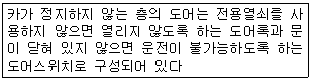
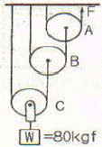
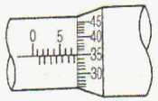
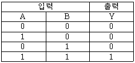
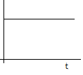
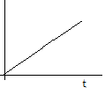
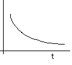
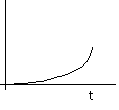
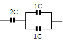

승강기기능사 (2008-03-30 기출문제)
1과목: 승강기개론
1. 수평보행기의 구조물이 아닌 것은?
- 내측판
- 스텝
- 균형추
- 핸드레일
(정답률: 81%)

2. 카의 속도가 비상적으로 중대한 경우 조속기의 1단계 작동 시기는 매분의 속도가 정격속도의 몇 배를 넘지 않는 범위 내이어야 하는가?(관련 규정 개정전 문제로 여기서는 기존 정답인 3번을 누르면 정답 처리 됩니다. 자세한 내용은 해설을 참고하세요.)
- 1.5배
- 1.4배
- 1.3배
- 1.2배
(정답률: 76%)
3. 유압엘리베이터 유압회로에서 상승 운전 중 정전으로 펌프가 정지시, 작동유가 역류해 카가 하강하는 것을 방지하는 것은?
- 릴리프밸브
- 업밸브
- 정유량밸브
- 체크밸브
(정답률: 64%)
4. 동일 승강로에 2대 이상의 엘리베이터를 설치한 경우에 속도가 다르거나 정지층이 달라 피트 바닥의 높이차가 0.6m 이상일 때에는 그 사이에 몇 m 이상의 추락 방지용 난간을 견고하게 설치하여야 하는가?
- 0.5m
- 0.7m
- 0.9m
- 1.1m
(정답률: 40%)
5. 속도 90m/min인 엘리베이터의 피트깊이는 몇 mm 이상이어야 하는가?
- 1500mm
- 1800mm
- 2100mm
- 2400mm
(정답률: 55%)
6. 에스컬레이터의 안전장치가 아닌 것은?
- 역회전 방지장치
- 스텝체인 안전장치
- 역류 제지장치
- 핸드레일 안전장치
(정답률: 70%)
7. 엘리베이터 기계실에 관한 설명 중 옳지 않은 것은?
- 바닥면적은 일반적으로 수평영면적의 2배 이상으로 한다.
- 기계실의 바로 위층 또는 인접한 벽면에 물탱크실을 설치할 수 있다.
- 실온은 원칙적으로 40℃ 이하를 유지할 수 있어야 한다.
- 기계실에는 일반적으로 엘리베이터와 관계없는 설비를 설치하지 않아야 한다.
(정답률: 77%)
8. 3상교류의 단속도 전동기에 전원을 공급하는 것으로 기동과 정격운전을 하고 정지는 전원을 차단한 후 제동기에 의해 기계적으로 브레이크를 거는 제어방식은?
- 교류1단 속도제어
- 교류2단 속도제어
- VVF제어
- 교류귀환 전압제어
(정답률: 54%)
9. 다음은 무엇에 대한 설명인가?

- 도어 인터록
- 도어 크로저
- 스윙 도어
- 도어 머신
(정답률: 70%)
10. 에스컬레이터 디딤판의 속도는 일반적인 경우 몇 m/min 이하로 하여야 하는가?
- 30m/min
- 35/m/min
- 50m/min
- 60m/min
(정답률: 60%)
11. 어더 컷(under cut) 홈 시브에 대한 설명으로 옳지 않은 것은?
- 로프와 시브의 마찰계수를 높이기 위한 것이다.
- 로프 마모율이 비교적 심하지 않다.
- 주로 싱글 랩팽(1:1로핑)에 사용된다.
- 홈의 형상은 시브 홈의 밑을 도려낸 것이다.
(정답률: 60%)
12. 수평보행기의 경사도가 8도 이하인 경우, 디딤판의 속도는 몇 m/min 이하로 하여야 하는가?
- 50m/min
- 40m/min
- 35m/min
- 30m/min
(정답률: 36%)
13. 승강기에 사용되는 전동기의 용량을 결정하는 요소로 거리가 먼 것은?
- 정격 적재 하중
- 정격 속도
- 종합 효율
- 건물 높이
(정답률: 71%)
14. 다음 중 과부하 감지장치의 작동에 따른 연계 작동에 포함되지 않는 것은?
- 카가 움직이지 않는다
- 경보음이 울린다.
- 통화장치가 작동된다.
- 문이 닫히지 않는다.
(정답률: 83%)
15. 정격속도가 30m/min인 화물용 엘리베이터의 비상정지장치 작동시의 카의 최대 속도는 몇 m/min인가?(관련 규정 개정전 문제로 기존 정답은 4번입니다. 여기서는 4번을 누르면 정답 처리 됩니다.)
- 39m/min
- 42m/min
- 63m/min
- 68m/min
(정답률: 76%)
2과목: 안전관리
16. 균형추의 총 중량을 결정하는 계산식은?(단, 여기서 L:정격하중, F:오버밸런스율이다)
- 균형추 총 중량=카 자체중량×LㆍF
- 균형추 총 중량=카 자체중량+LㆍF
- 균형추 총 중량=카 자체중량+L
- 균형추 총 중량=카 자체중량+L+F
(정답률: 81%)
17. 완충기에 관한 설명으로 옳은 것은?(관련 규정 개정전 문제로 여기서는 기존 정답인 4번을 누르면 정답 처리됩니다. 자세한 내용은 해설을 참고하세요.)
- 완충기의 최대감속도는 2.5G를 초과하는 감속도가 일반적으로 1/10초를 넘지 않아야 한다.
- 완충기의 행정은 카가 정격속도의 125%로 충돌했을 때 평균 감속도가 9.8m/s2이하가 되도록 한다.
- 스프링 완충기와 엘리베이터의 속도가 90m/min 이상에 사용한다.
- 균형추측 완충기는 스프링간 접촉된 부분이 없이 균형 추 자중의 2배를 견디어야 한다.
(정답률: 55%)
18. 엘리베이터를 속도에 따라 분류할 때 중속의 범위로서 가장 적당한 것은?(오류 신고가 접수된 문제입니다. 반드시 정답과 해설을 확인하시기 바랍니다.)
- 60~1⑤m/min
- 60~120m/min
- 90~120m/min
- 90~150m/min
(정답률: 50%)
19. 화물용 승강기에 대한 설명으로 옳지 않은 것은?
- 화물운반에 직접 종사하는 조작자 또는 화물취급자 1인 이외에는 탑승을 금한다.
- 경우에 따라서는 승객을 운송할 수 있다.
- 허용 적재하중을 표시하여야 한다.
- 주행 중에는 출입문이 개폐되어서는 아니된다.
(정답률: 68%)
20. 승강기의 안전진단사항에 관한 설명으로 옳지 않은 것은?
- 설계 사양과 도면의 확인 검토
- 설치 후 규정에 따른 성능시험 및 평가
- 제작 공정검사
- 사용 소재 검사는 관련 부품이 조립된 상태에서 실시
(정답률: 64%)
21. 승강기를 새로 설치하고 사용하기 전에 안전장치를 점검하여야 한다. 다음 중 점검할 안전장치와 거리가 먼 것은?
- 과부하감지장치
- 파이널리미트스위치
- 조속기
- 가이드레일
(정답률: 64%)
22. 승강기의 점검시 측정장비로 거리가 먼 것은?
- 절연저항계
- 버니아캘리퍼스
- 풍속계
- 조속계
(정답률: 72%)
23. 재해의 원인분석의 개별분석방법에 관한 설명으로 옳지 않은 것은?
- 이 방법은 재해 건수가 적은 사업장에 적용된다.
- 특수하거나 중대한 재해의 분석에 적합하다.
- 청취에 의하여 공통 재해의 원인을 알 수 있다.
- 개개의 재해 특유의 조사항목을 사용할 수 있다.
(정답률: 58%)
24. 다음 중 안전ㆍ보건표지의 색체기준 및 용도의 표시방법으로 옳지 않은 것은?
- 녹색-안내
- 파랑-지시
- 청색-경고
- 빨강-금지, 경고
(정답률: 80%)
25. 다음 중 사업장에 승강기의 조립 또는 해체작업을 할 때 조치하여야 할 사항으로 거리가 먼 것은?
- 작업을 지휘하는 자를 선임하여 지휘자의 책임하에 작업을 실시할 것
- 작업할 구역에는 관계근로자외의 자의 출입을 금지시킬 것
- 기상상태의 불안정으로 인하여 날씨가 몹시 나쁠 때에는 그 작업을 중지시킬 것
- 점사용자의 편의를 위하여 야간작업을 하도록 할 것
(정답률: 86%)
26. 전기기기의 외함 등이 절연이 나빠져서 전류가 누설되어도 감전사고의 위험이 적도록 하기 위하여 어떤 조치를 하여야 하는가?
- 도금을 한다.
- 영상변류기를 설치한다.
- 퓨즈를 설치한다.
- 접지를 한다.
(정답률: 80%)
27. 동력에 의하여 작동하는 기계ㆍ기구의 동력전달부분 및 속도조절부분의 방호장치로서 알맞은 것은?
- 자동전격방지기를 부착한다.
- 압력제한스위치를 부착한다.
- 덮개를 부착한다.
- 급정지장치를 부착한다.
(정답률: 48%)
28. 기계안전의 기본원칙 중 가장 효율적인 것은?
- 안전장치
- 방호조치
- 자동화
- 개인 보호구
(정답률: 40%)
29. 유압펌프에 관한 설명 중 옳지 않은 것은?
- 펌프의 토출량이 크면 속도도 커진다.
- 진동과 소음이 작아야 한다.
- 압력맥동이 커야 한다.
- 일반적으로 스크류 펌프가 사용된다.
(정답률: 64%)
30. 균형추에 비상정지장치가 설치되어 있을 경우, 카 측과 균형추 쪽의 작동에 관한 설명으로 옳은 것은?
- 카 측보다 균형추 쪽이 먼저 작동되어야 한다.
- 카 측과 균형추 쪽이 동일하게 작동되어야 한다
- 카 측보다 균형추 쪽이 늦게 작동되어야 한다.
- 카 측, 균형추 쪽의 아무 쪽이나 먼저 작동되어도 상관 없다.
(정답률: 44%)
3과목: 승강기보수
31. 로프식 엘리베이터에서 주로프의 끝 부분은 몇 가닥 마다 로프소켓에 바빗트 채움을 하거나 체결식 로프소켓을 사용하여 고정하여야 하는가?
- 1가닥
- 2가닥
- 3가닥
- 4가닥
(정답률: 53%)
32. 엘리베이터의 제동기는 그 설치목적상 승객의 안전에 대단히 중요한 부품이다. 승객용 엘리베이터에 있어서는 몇 % 정도의 부하에서 전속으로 하강하는 차체를 위험없이 감속시킬 수 있어야 하는가?
- 80%
- 100%
- 110%
- 125%
(정답률: 59%)
33. 카 상부에서 행하는 검사가 아닌 것은?
- 비상구출구가 간단한 조작으로 열릴 수 있는지 여부
- 안전스위치, 보수용 버튼은 작동이 원활한지 여부
- 조속기의 작동은 정확하게 작동하는지 여부
- 조속기 로프는 이상 없이 잘 부착되어 있는지 여부
(정답률: 43%)
34. 정전시 카 내의 예비조명장치는 램프중심으로부터 2m 떨어진 수직면상에서 측정하여 몇 룩스[lux] 이상의 조도를 확보할 수 있어야 하는가?(관련 규정 개정전 문제로 여기서는 기존 정답인 2번을 누르면 정답 처리됩니다. 자세한 내용은 해설을 참고하세요.)
- 0.1 LUX
- 1.0 LUX
- 10 LUX
- 100 LUX
(정답률: 63%)
35. 조속기의 스위치나 켓치의 작동속도가 맞지 않을 때는 무엇을 조정하는가?
- 플라이웨이트
- 조정스프링
- 연결핀
- 베어링
(정답률: 46%)
36. 엘리베이터의 카(CAR) 구조에 대한 설명 중 옳지 않은 것은?
- 카 내부는 구조상 경비한 부분을 제외하고는 불연재료로 만들거나 씌워야 한다.
- 카 천장에 설치된 비상구 출구는 카 내에서 열 수 없도록 잠금장치를 해야 한다.
- 카 벽에 설치된 비상구 출구는 카 안쪽으로만 열리도록 한다.
- 2개의 문이 설치된 경우에는 2개의 문이 동시에 열려 통로로 사용되는 구조이어야 한다.
(정답률: 48%)
37. 디딤면이 고무제품 등 미끄러지기 어려운 구조일 경우에는 수평보행기의 경사도를 몇 도 이하로 할 수 있는가?
- 8°이하
- 12°이하
- 15°이하
- 18°이하
(정답률: 56%)
38. 다음 중 에스컬레이터를 수리할 때 지켜야 할 사항으로 적당하지 않은 것은?
- 상부 및 하부에 사람이 접근하지 못하도록 단속한다.
- 작업 중 움직일 때는 반드시 상부 및 하부를 확인하고 복창한 후 움직인다.
- 주행하고자 할 때는 작업자가 안전한 위치에 있는지 확인한다.
- 동작시간을 게시한 후 시간이 되면 동작시킨다.
(정답률: 74%)
39. 도어 열림방식 중 2S 오픈방식을 바르게 설명한 것은?
- 2매 측면 열림
- 2매 중앙 열림
- 2매 위로 열림
- 2매 위아래 열림
(정답률: 71%)
40. 자동차용 엘리베이터에서 운전자가 항상 전진방향으로 차량을 입ㆍ출고할 수 있도록 해주는 방향 전환장치는?
- 턴 테이블
- 카 리프트
- 차량 감지기
- 출차 주의등
(정답률: 73%)
41. 권상기의 점검 사항이 아닌 것은?
- 전동, 소음, 운전의 원활성 등 운전상황의 이상 유무를 살핀다.
- 기름의 누설 유무를 점검하고 청소한다.
- 브레이크 작동 여부를 점검하고 조정한다.
- 과부하검출장치의 작동여부를 점검한다.
(정답률: 49%)
42. 승강장에서는 물체가 쉽게 끼어 들어가지 않도록 디딤판과 콤의 물림량을 기준에 정하고 있다. 스텝방식 에스컬레이터의 디딤판과 콤의 물림량은 몇 mm 이상이어야 하는가?
- 4mm 이상
- 5mm 이상
- 6mm 이상
- 7mm 이상
(정답률: 34%)
43. 다음 중 교류 엘리베이터의 속도제어방식으로 이용되는 것이 아닌 것은?
- 교류 1단 속도제어
- 가변전압 가변주파수 제어
- 교류 궤환 제어방식
- 워드-레오나드 방식
(정답률: 70%)
44. 엘리베이터의 안정된 사용 및 정지를 위하여 승강장ㆍ중앙 관리실 또는 경비실 등에 설치되어, 카 이외의 장소에서 엘리베이터 운행의 정지조작과 재개조작이 가능한 안전장치는?
- 자동/수동 절환스위치
- 도어 안전장치
- 파킹스위치
- 카 운행정지스위치
(정답률: 52%)
45. 에스컬레이터의 제작기준으로 맞지 않는 것은?
- 경사도는 일반적으로 30도 이하로 한다.
- 핸드레일의 속도는 디딤판과 동일 속도로 한다.
- 디딤판의 속도는 65m/min 이하로 한다.
- 이동식 핸드레일의 경우, 운행전구간에서 디딤판과 핸드레일의 속도차는 0~2% 이하로 한다.
(정답률: 73%)
4과목: 기계,전기기초이론
46. 승강기에 적용하는 가이드 레일의 규격을 결정하는데 관계가 가장 적은 것은?
- 조속기의 속도
- 지진발생시 건물의 수평 진동에 의해 레일과 가이드슈 사이에 작용하는 수평진동력
- 비상정지장치 작동시 작용할 수 있는 좌굴하중
- 불균형한 큰 하중이 적재될 때 작용하는 회전 모멘트
(정답률: 55%)
47. 10옴의 저항에 5A의 전류를 흐르게 하기 위해서는 몇 V의 전압이 필요한가?
- 0.02V
- 0.5V
- 5.0V
- 50V
(정답률: 72%)
48. 다음 중 엘리베이터에 주로 사용하는 전동기는?
- 3상유도전동기
- 단상유도전동기
- 동기전동기
- 셀신전동기
(정답률: 75%)
49. 그림과 같은 도르래 장치에서 80kgf의 물체를 C도르래에 걸었을 때 잡아당기는 힘 F는 몇 kgf 이상이면 되는가?(단, 움직이는 도르래의 무게와 마찰손실은 무시한다.)

- 5kgf
- 10kgf
- 20kgf
- 30kgf
(정답률: 42%)
50. 그림과 같은 마이크로미터에 나타난 측정값은 몇 mm인가?

- 0.85mm
- 5.35mm
- 7.85mm
- 8.35mm
(정답률: 74%)
51. 표와 같은 진리표에 대한 논리게이트는?

- OR회로
- NOR회로
- AND회로
- NAND회로
(정답률: 63%)
52. 배선용 차단기의 영문 문자기호로 알맞은 것은?
- S
- DS
- THR
- MCCB
(정답률: 72%)
53. 어떤 물체가 받는 마찰력은 접촉하는 상태의 마찰계수와 어떤 것의 곱에 비례하는가?
- 속도
- 가속도
- 수직력
- 수평력
(정답률: 26%)
54. 함수의 라플라스 변환식이 F(s) = 1/s일 때, 시간함수 f(t)의 파형은?




(정답률: 53%)
55. 다음 중 회로시험기로 측정할 수 없는 것은?
- 직류 전류
- 직류 전압
- 저항
- 주파수
(정답률: 71%)
56. 그림과 같은 콘덴서의 합성정전용량 [F]은?

- 1C
- 2C
- 3C
- 4C
(정답률: 51%)
57. 클리퍼(CLIPPER)회로에 대한 설명으로 적절한 것은?
- 교류회로를 직류로 변환하는 회로
- 사인파를 일정한 레벨로 증폭시키는 회로
- 구형파를 일정한 레벨로 증포시키는 회로
- 파형의 상부 또는 하부를 일정한 레벨로 자르는 회로
(정답률: 49%)
58. 20H의 자체 인덕턴스를 가지는 코일의 전류가 0.1초 사이에 1A만큼 변하면 유도 기전력은 몇 V 인가?
- 2V
- 20V
- 200V
- 2000V
(정답률: 40%)
59. 캠이 가장 많이 사용되는 경우는?
- 요동운동을 직선운동으로 할 때
- 왕복운동을 직선운동으로 할 때
- 회전운동을 직선운동으로 할 때
- 상하운동을 직선운동으로 할 때
(정답률: 58%)
60. 3분간 876000[J]의 일을 하였다면 소비전력은 약 몇[W]가 되겠는가?
- 4867W
- 9734W
- 146000W
- 292000W
(정답률: 38%)